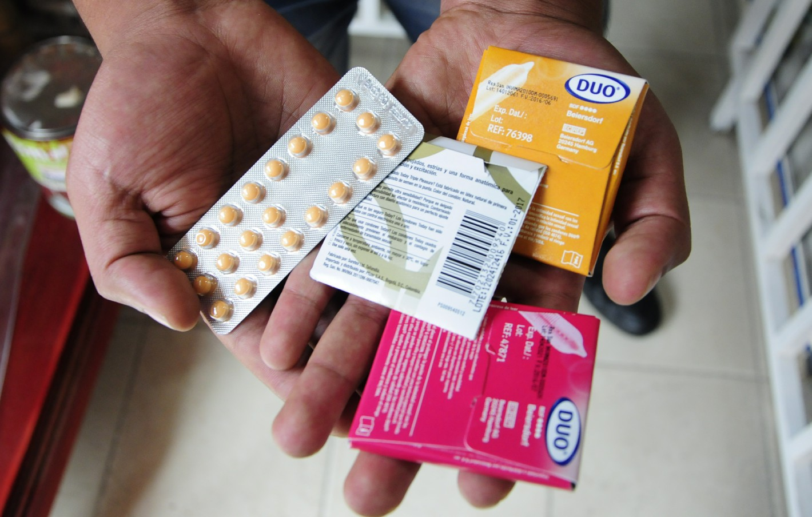
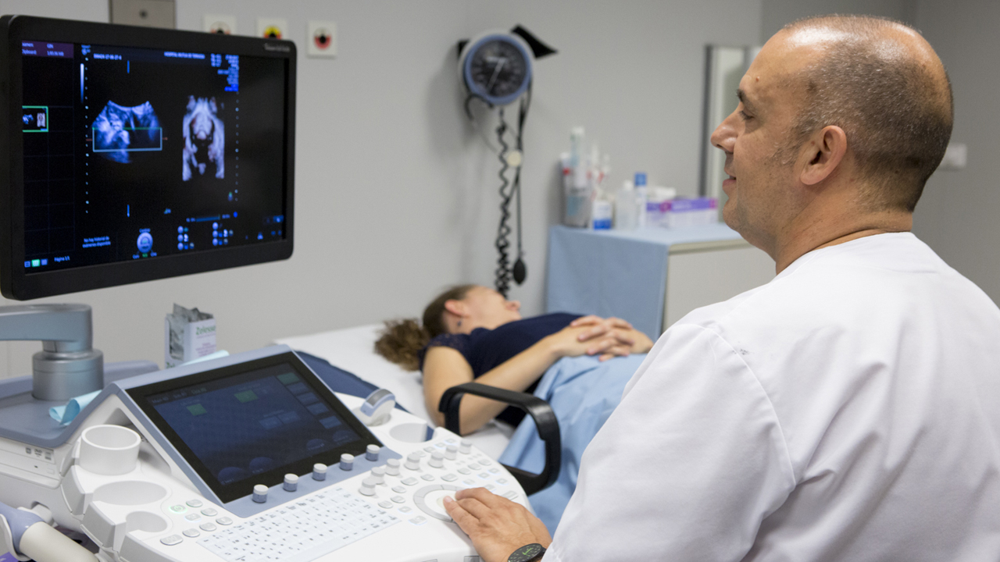

Obstetricia - Ecografía
La Obstetricia es una rama de las Ciencias de la salud que se ocupa del embarazo, parto y puerperio, comprendiendo también los aspectos psicológicos y sociales de la maternidad. Los profesionales son conocidos como Obstetra. El Consultorio Obstétrico – Ecografías de la Obstetra María Alicia Briones Gonzales, brinda servicios de atención obstétrica a la Mujer en Ecografía transvaginal, ecografía obstétrica del I, II y III trimestre, Diagnóstico de embarazo, atención prenatal, atención de parto en clínica, Planificación familiar, prevención del cáncer de cérvix (PAP), examen de mamas y tratamiento de descensos.
Diagnóstico de sangre en embarazo. |
|
Control de embarazo. |
|
Partos. |
|
Planificación familiar. |
|
Papanicolaou. |
|
Descensos. |
|
Consejería en educación sexual. |
Planificación familiar
La Planificación Familiar, te ayuda a decidir cuándo y cuántos hijos tener de acuerdo a tus condiciones socio económicas y para que tus hijos puedan recibir la atención que merecen.
Existen varios métodos:

El preservativo: Método de barrera de fácil uso y tienen un fracaso entre 5 a 8 %,sirve también para prevenir enfermedades de transmisión sexual como la gonorrea, VIH, etc. |
|
Coito Interrumpido: Consiste en interrumpir la relación antes de la eyaculación. Las tasas de fracaso son entre el 15-20 %. La lactancia: Disminuye la fertilidad pero ofrece muy poca protección. |
|
Método de Billings: Se basa en la elasticidad que se presenta en el moco alrededor de los días de fertilidad (mientras más elástico, mayor riesgo) el fracaso es de un 5-15%. |
|
Método de la Temperatura Basal: La temperatura debe ser tomada regularmente, se considera que la ovulación ocurre cuando hay un aumento de la temperatura y por tanto se debe evitar las relaciones sexuales 5 días antes de la ovulación hasta 3 días después. El fracaso es de un 10%. |
|
Los Dispositivos Intrauterinos: Los más usados son la T de cobre y la de plata que se introducen en el útero a través del conducto cervical. Son métodos que se pueden usar hasta unos 10 años, y la tasa de fracaso es de 3 %. |
Métodos Hormonales
Anticonceptivos Hormonales Orales: Se usan en una combinación de dosis que inhiben la ovulación. |
|
Anticonceptivos Hormonales Inyectados: Estos actúan impidiendo la ovulación. |
|
Norplant: Son unos dispositivos plásticos finos y pequeños implantados quirúrgicamente debajo de la piel del brazo que segregan una hormona sintética similar a la progesterona en cantidades pequeñas la cual actúa evitando la ovulación. |
Métodos Quirúrgicos
Tubectomìa: es la ligadura de las trompas de Falopio en la mujer y en el hombre la vasectomía. La esterilización Quirúrgica es uno de los métodos más difíciles de revertir, por lo que se realiza sólo en mujeres que están completamente decididas a no tener más hijos definitivamente. |
Embarazo
Diagnóstico de embarazo
En diagnóstico de embarazo se realiza en forma temprana mediante test en sangre y en orina. Se confirma por medio de la ecografía a partir de la cuarta semana de gestación.
Atención prenatal
La frecuencia de los controles prenatales varía de acuerdo al grado de riesgo que la gestante presente. En los primeros controles se ordena la detección de determinadas infecciones (hepatitis B y C, Sífilis -VDRL-, HIV, toxoplasmosis, etc.) y también se practica un examen ginecológico y estudios complementarios (examen de Papanicolaou y cultivo de flujo vaginal, ecografía, etc.
Las maniobras para determinar actitud y presentación (maniobras de Leopold) comienzan a efectuarse alrededor de la semana 30 (6.5 meses). La auscultación cardíaca fetal, en consultorio con estetoscopio de Pinard, comienza a realizarse a partir de la semana 20 de gestación, pero se puede realizar a partir de las 10 semanas con ultrasonido.
Durante la atención prenatal, se instruye a la gestante sobre la maternidad, se instruye a la gestante sobre la maternidad, la procreación responsable y la planificación familiar. Además, contribuye a mejorar relación Obstetra y gestante y la prepara para el parto.
Emergencias
En obstetricia se pueden presentar emergencias por riesgo grave materno, fetal o de ambos (materno fetal).
Las tres principales emergencias son:
Embarazo ectópico: Cuando el embrión se implanta en la trompa de Falopio, en el ovario (raras veces) o en el interior de la cavidad peritoneal, lo que puede producir hemorragias internas masivas. |
|
Pre-eclampsia: Se caracteriza por aumento de la presión arterial a partir de las 20 semanas de gestación acompañada de proteinuria y/o edema, que pone en riesgo a la madre y el feto. |
|
Prolapso del cordón umbilical: Es la salida a través del cuello uterino hacia la vagina o incluso al exterior a través de la vulva, del cordón umbilical, que puede ocurrir cuando la bolsa amniótica se rompe, ya sea antes o durante el trabajo de parto. No representa un riesgo materno grave como las anteriores, pero con una mortalidad muy elevada para el feto. |
Ecografía
La ecografía o ultrasonido es útil, rápida, sencilla de realizar y segura en Ginecología y Obstetricia.
La ecografía en Obstetricia es una prueba segura y se realiza por vía vaginal o por vía abdominal dependiendo la edad de la gestación.
En ginecología permite realizar diagnósticos como en el caso de hemorragias fuera de la menstruación, hemorragias vaginales en mujeres postmenopáusicas o menstruaciones de excesiva cantidad, dolores pélvicos, sospecha de tumoraciones de los órganos genitales, etc.
Se recomienda tres ecografías en un embarazo normal:
I Ecografía de la 11-14 semana: Nos informa sobre la vitalidad embrionaria, el número de embriones y la edad gestacional, a través de la medida de la longitud del embrión (CRL), de una manera muy fiable. Es además una ecografía muy importante porque en ella medimos la translucencia nucal, parámetro que entra a formar parte del cribado de cromosomopatías del primer trimestre y ver más estructuras fetales, lo que nos permite detectar algunas anomalías precoces. También sirve para evaluar el aparato genital interno materno y descartar patologías como miomas uterinos o quistes de ovario. |
|
II Ecografía Obstétrica:se realiza entre las semanas 18 y 22. Llamada también ecografía morfológica. Es el momento óptimo para hacer un estudio detallado del feto, ver todos sus órganos y sistemas y medir el volumen del líquido amniótico, imprescindible para poder realizar una valoración ecográfica adecuada. En esta ecografía, la más importante de todo el embarazo, además de consignar la localización placentaria, la posición fetal y las medidas del feto, hacemos un rastreo minucioso de toda la anatomía fetal (cabeza, cara, columna vertebral, abdomen, tórax, corazón y extremidades) en busca de posibles anomalías. |
|
III Ecografía Obstétrica:se realiza de la semana 32-36, determina la estática fetal (posición del feto dentro del útero), la localización de la placenta, la valoración de la cantidad de líquido amniótico (el líquido amniótico es un indicador de bienestar fetal, cuando disminuye el feto puede estar en riesgo) y a la valoración del crecimiento y bienestar fetal. En esta ecografía también se investigan las anomalías de aparición tardía, como pueden ser hidrocefalia, dilataciones intestinales, obstrucciones renales, etcétera. En casos necesarios se pueden hacer estudios Doppler, que nos ayudan a predecir el estado de salud del feto. |